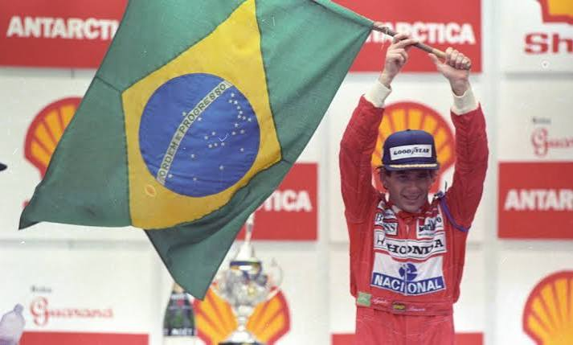
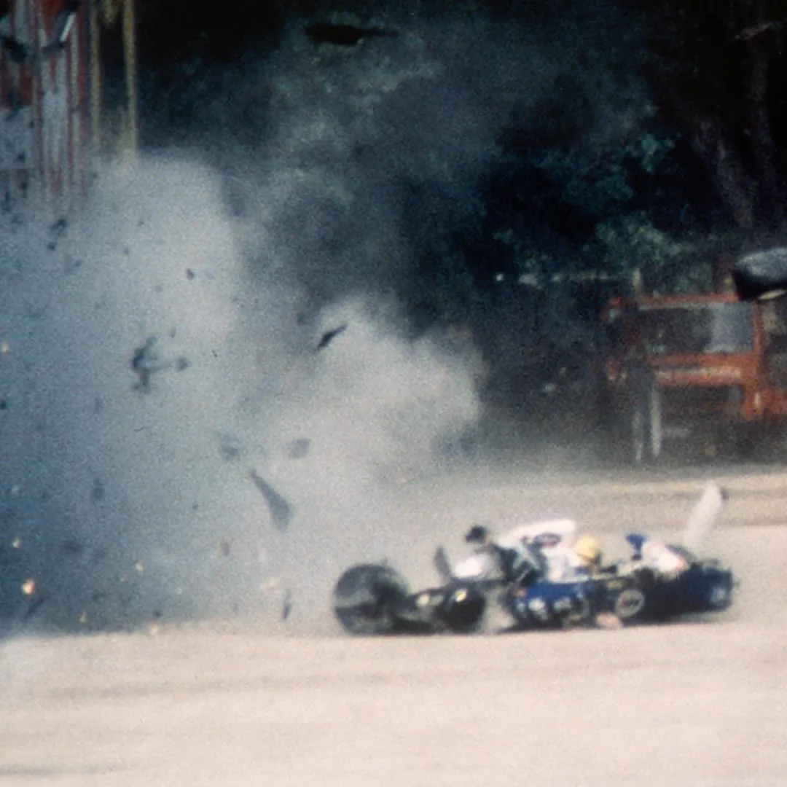
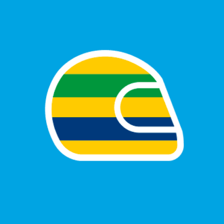

Infância
Ayrton Senna nasceu em São Paulo, em 1960, filho do empresário Milton
da Silva e de Neide Senna, e cresceu ao lado dos irmãos Viviane e
Leonardo. Apelidado carinhosamente pela família de “Beco”, desde
pequeno demonstrava paixão por rodas, brincando com triciclos,
bicicletas e carrinhos de pedais, além de acompanhar corridas pela
televisão.
Vendo esse interesse, seu pai construiu para ele um kart com motor de
cortador de grama quando Ayrton tinha apenas quatro anos. O garoto
começou pilotando no quintal e em ruas em construção, passou a treinar
no Kartódromo de Interlagos aos sete anos e, aos 13, estreou em
competições oficiais de kart.
A determinação de Senna já se destacava na infância: para correr,
precisava manter boas notas na escola — compromisso que cumpria à
risca. Além disso, ao notar dificuldade no molhado, treinava sob chuva
em Interlagos até se tornar o mais rápido na pista. Esses passos
moldaram a disciplina e a genialidade que marcaria o automobilismo
mundial.
Clique aqui pra saber mais sobre a infância de Ayrton Senna
Trajetória no Kart
-
1973 - Estreia oficial aos 13 anos e primeira
vitória no Kartódromo de Interlagos.
-
1974 - Conquistou seu primeiro título, tornando-se
Campeão Paulista na categoria Júnior, também no Kartódromo de
Interlagos.
-
1975 - Foi vice-campeão brasileiro e venceu o
campeonato paulista.
-
1976 - Vitória nas Três Horas de Kart de São Paulo
(em dupla com Mário Sérgio de Carvalho).
-
1977 - Conquistou o Sul-Americano de Kart disputado
em San José, no Uruguai.
-
1978 - Estreou no Mundial de Kart, na França,
terminando em sexto lugar. No mesmo ano, também venceu o Campeonato
Brasileiro de Kart.
-
1979 - Foi vice-campeão mundial no Estoril, em
Portugal. Durante o Mundial, surgiu o famoso capacete amarelo com
faixas verdes e azuis.
-
1980 - Foi novamente vice-campeão mundial de kart,
em Nivelles, na Bélgica. Também conquistou os campeonatos Brasileiro
e Sul-Americano de Kart.
-
1981 - Ayrton Senna foi para a Europa competir na
Fórmula Ford 1600. Mesmo assim, continuou ligado ao kart e disputou
o Mundial daquele ano.
-
1982 - Conquistou o Campeonato Pan-Americano de
Kart, antes de se dedicar cada vez mais às categorias de fórmula.


Carreira
Categorias de base
Fórmulas na Europa: Mudou-se para a Inglaterra e
dominou as categorias de acesso.
Foi campeão da Fórmula Ford 1600 (1981), da Fórmula Ford 2000 (1982) e
da competitiva
Fórmula 3 Britânica (1983), o que chamou a atenção das equipes
principais da Fórmula 1.
Chegada à Fórmula 1
Toleman (1984): Estreou por uma equipe modesta, mas
chocou o mundo no GP de Mônaco sob tempestade, saindo de 13º para
terminar em 2º lugar, quase vencendo a prova.
Lotus (1985-1987): Conquistou sua primeira vitória
logo no início de 1985, no GP de Portugal, debaixo de forte chuva.
Pela Lotus,
acumulou 6 vitórias e se consolidou como o piloto mais rápido do grid
em voltas qualificatórias.
Anos de ouro na McLaren
McLaren (1988-1993): Contratado pela McLaren em 1988
para correr ao lado do francês Alain Prost, Senna atingiu o ápice de
sua performance.
Essa parceria gerou a maior rivalidade da história do automobilismo:
- 1988 (1ºtítulo):
Venceu 8 corridas no ano e garantiu o campeonato após uma virada
histórica no GP do Japão.
- 1989:
Perdeu o título para Prost após uma colisão polêmica entre os dois na
chicane de Suzuka.
- 1990 (2ºtítulo):
Deu o troco em Prost (então na Ferrari), garantindo o bicampeonato
após um novo acidente na primeira curva em Suzuka.
- 1991 (3ºtítulo):
Dominou o início da temporada e conquistou sua primeira e emocionante
vitória no GP do Brasil, cruzando a linha apenas com a sexta marcha do
carro.
- 1992-1993:
Mesmo com o carro da McLaren tecnicamente inferior ao da Williams,
realizou exibições magistrais, como a histórica primeira volta do
GP da Europa de 1993 em Donington Park, ultrapassando quatro carros na
chuva.
Últimos anos na Williams
Williams (1994): Senna se transferiu para a Williams,
mas o carro não era confiável e ele sofreu com problemas de
dirigibilidade.
No GP de San Marino, em Imola, Senna sofreu um acidente fatal na curva
Tamburello, chocando-se contra o muro de proteção. O piloto brasileiro
faleceu aos 34 anos, deixando um legado eterno no esporte.
FF1600 - 1981
Desde o começo da sua carreira no automobilismo, Ayrton Senna sempre
foi extremamente dominante em qualquer modalidade que participava, em
1981 quando começou a competir oficialmente, colecionou 12 vitórias na
modalidade FF1600.
Foram 20 corridas disputadas, 12 vitórias, 5 segundos lugares e 1
terceiro lugar.
Durante o tempo que correu na FF1600, ganhou dois títulos, o RAC
British Formula Ford 1600 Championship e o Townsend Thoresen Formula
Ford 1600 Championship, sendo esse o principal título para a
categoria.
| Data |
Circuito |
Resultado |
| 15/03/1981 |
Brands Hatch |
🥇 1º |
| 24/05/1981 |
Oulton Park |
🥇 1º |
| 25/05/1981 |
Mallory Park |
🥇 1º |
| 07/06/1981 |
Snetterton |
🥇 1º |
| 27/06/1981 |
Oulton Park |
🥇 1º |
| 04/07/1981 |
Donington Park |
🥇 1º |
| 25/07/1981 |
Oulton Park |
🥇 1º |
| 26/07/1981 |
Mallory Park |
🥇 1º |
| 02/08/1981 |
Brands Hatch |
🥇 1º |
| 09/08/1981 |
Mallory Park |
🥇 1º |
| 15/08/1981 |
Donington Park |
🥇 1º |
| 31/08/1981 |
Thruxton |
🥇 1º |
FF2000 - 1982
Com a sua extrema dominância na categoria anterior, chamou a atençao
da equipe Rushen Green Racing, que o contratou para correr a temporada
de 82, nesse ano, Ayrton Senna teve a melhor temporada da sua
carreira, vencendo 22 corridas das 28 disputadas, um aproveitamento de
78% de vitórias.
Foi Campeão Britânico de Fórmula Ford 2000 e Campeão Europeu de
Fórmula Ford 2000.
Ao todo, foram dois títulos, 22 vitórias, 2 segundos lugares e 4
abandonos.
| Data |
Circuito |
Resultado |
| 07/03/1982 |
Brands Hatch |
🥇 1º |
| 27/03/1982 |
Oulton Park |
🥇 1º |
| 28/03/1982 |
Silverstone |
🥇 1º |
| 04/04/1982 |
Donington |
🥇 1º |
| 09/04/1982 |
Snetterton |
🥇 1º |
| 12/04/1982 |
Silverstone |
🥇 1º |
| 02/05/1982 |
Donington |
🥇 1º |
| 03/05/1982 |
Mallory Park |
🥇 1º |
| 31/05/1982 |
Brands Hatch |
🥇 1º |
| 06/06/1982 |
Mallory Park |
🥇 1º |
| 13/06/1982 |
Brands Hatch |
🥇 1º |
| 26/06/1982 |
Oulton Park |
🥇 1º |
| 03/07/1982 |
Zandvoort |
🥇 1º |
| 10/07/1982 |
Castle Combe |
🥇 1º |
| 01/08/1982 |
Snetterton |
🥇 1º |
| 08/08/1982 |
Hockenheim |
🥇 1º |
| 15/08/1982 |
Zeltweg |
🥇 1º |
| 22/08/1982 |
Jyllands-Ring |
🥇 1º |
| 30/08/1982 |
Thruxton |
🥇 1º |
| 04/09/1982 |
Oulton Park |
🥇 1º |
| 05/09/1982 |
Silverstone |
🥇 1º |
| 12/09/1982 |
Mondello Park |
🥇 1º |
Fórmula 3 - 1983
Sua ida para a fórmula 3 involveu
Dennis Rushen, chefe da equipe na qual Senna representava, ele apresentou o piloto
para o Dick Bennetts, chefe da equipe
West Surrey Racing, que o contratou para a próxima temporada da F3.
A estrei não podia ser diferente, vitória!
Logo na sua primeira disputa na Fórmula 3, Ayrton Senna já havia
mostrado para o que veio, foram 20 corridas com 12 vitórias, 2
segundos lugares e 132 pontos, no final da temporada recebeu o título
de Campeão Britânico da Formula 3.
| Data |
Circuito |
Resultado |
| 06/03/1983 |
Silverstone |
🥇 1º |
| 13/03/1983 |
Thruxton |
🥇 1º |
| 20/03/1983 |
Silverstone |
🥇 1º |
| 27/03/1983 |
Donington Park |
🥇 1º |
| 04/04/1983 |
Thruxton |
🥇 1º |
| 24/04/1983 |
Silverstone |
🥇 1º |
| 02/05/1983 |
Thruxton |
🥇 1º |
| 08/05/1983 |
Brands Hatch |
🥇 1º |
| 30/05/1983 |
Silverstone |
🥇 1º |
| 16/07/1983 |
Silverstone |
🥇 1º |
| 29/08/1983 |
Silverstone |
🥇 1º |
| 23/10/1983 |
Thruxton |
🥇 1º |
Fórmula 1 - 1984
25 de Março de 1984, a primeira corrida da Ayrton Senna pela Fórmula 1
foi em casa, no Brasil, em Jacarépagua-RJ, infelizmente não conseguiu
terminar a corrida e precisou abandonar por conta de problemas
mecânicos.
Estando no auge do campeonato e correndo com os melhores pilotos da
época, Ayrton Senna levou apenas 6 corridas para conseguir o seu
primeiro pódio, no GP de Mônaco em 1984, ele largou em 13º e estava
pressionando o primeiro
Alain Prost,
mas a corrida precisou ser encerrada por conta chuva.
Na Fórmula 1, Ayrton Senna começou representando a Toleman, mesmo com
um carro inferior aos seus concerrentes, ele conseguiu um 2º lugar no
GP de Mônaco e um 3º no GP de Portugal, terminando o campeonato em 9º
lugar.
| Data |
Grande Prêmio |
Circuito |
Resultado |
| 03/06/1984 |
GP de Mônaco |
Monte Carlo |
🥈 2º |
| 21/10/1984 |
GP de Portugal |
Estoril |
🥉 3º |
Lotus - 1985-1987
1985
Ayrton correu com a Lotus durante 3 temporadas.
Em 21 de abril de 1985, ele conseguiu sua primeira vitória, disputando
o GP de Portugal, em Estoril, justamente sob a chuva, uma de suas
marcas registradas pelo alto desempenho e coragem. Ao todo, foram 16
corridas disputadas, 2 vitórias, 6 pódios e 7 poles, terminando o
campeonato em 4º lugar com 38 pontos.
| Data |
Grande Prêmio |
Circuito |
Resultado |
| 21/04/1985 |
GP de Portugal |
Estoril |
🥇 1º |
| 15/09/1985 |
GP da Bélgica |
Spa-Francorchamps |
🥇 1º |
1986
Em 1986 a história se repetiu, Ayrton Senna ficou em 4º lugar geral,
foram 16 corridas, 2 vitórias, 8 pódios e 8 poles terminando o
campeonato com 55 pontos.
| Data |
Grande Prêmio |
Circuito |
Resultado |
|
| 13/04/1986 |
GP da Espanha |
Jerez |
🥇 1º |
| 22/06/1986 |
GP de Detroit |
Detroit |
🥇 1º |
1987
Em 1987 foi o melhor ano de Ayrton Senna na Lotus, ele conseguiu
terminar o campeonato em 3º lugar conquistando 2 vitórias, 8 pódios e
1 pole em 16 corridas disputadas, somando 57 pontos.
| Data |
Grande Prêmio |
Circuito |
Resultado |
| 31/05/1987 |
GP de Mônaco |
Monte Carlo |
🥇 1º |
| 21/06/1987 |
GP dos Estados Unidos |
Detroit |
🥇 1º |
Senna já demonstrava grandes números quando estava na Lotus, mas foi
na McLaren que se consagrou tri-campeão mundial, agora com um carro
extremamente competitivo, conseguiu demonstrar toda a sua maestria e
que tinha nascido para estar atrás do volante.
Primeiro Título Mundial
1988
Senna e Prost dominaram as corridas dessa temporada, ao todo, das 16
corridas 15 foram vencidas por eles, Ayrton conseguiu 8 vitórias,
sendo a sua temporada com mais vitórias na Formula 1.
Além das 8 vitórias, ele conseguiu 13 poles e outros 4 pódios somando
90 pontos na tabela, sangrando-se campeão em Suzuka, GP do Japão onde
logo no ínicio teve uma colisão com Alain Prost e ambos sairam da
corrida.
| Data |
Grande Prêmio |
Circuito |
Resultado |
| 01/05/1988 |
GP de San Marino |
Autódromo Enzo e Dino Ferrari |
🥇 1º |
| 12/06/1988 |
GP do Canadá |
Gilles Villeneuve |
🥇 1º |
| 19/06/1988 |
GP de Detroit |
Urbano de Detroit |
🥇 1º |
| 10/07/1988 |
GP de Grã-Bretanha |
Silverstone |
🥇 1º |
| 24/07/1988 |
GP da Alemanha |
Hockenheim |
🥇 1º |
| 10/08/1988 |
GP da Hungria |
Hungaroring |
🥇 1º |
| 28/08/1988 |
GP da Bélgica |
Spa-Francorchamps |
🥇 1º |
| 30/11/1988 |
GP do Japão |
Suzuka |
🥇 1º |
O Segundo Título Mundial
1990
Em 1990, Ayrton Senna conseguiu 6 vitórias das 16 que disputou, foram
10 poles, e 13 pódios somando 78 pontos no campeonato.
Esse ano foi marcado pela sua demonstração extremamente fora de séria
em Mônaco, sendo considerado uma de sua melhores perfomances.
| Data |
Grande Prêmio |
Circuito |
Resultado |
| 11/03/1990 |
GP dos Estados Unidos |
Phoenix |
🥇 1º |
| 27/05/1990 |
GP de Mônaco |
Monte Carlo |
🥇 1º |
| 10/06/1990 |
GP do Canadá |
Montreal |
🥇 1º |
| 29/07/1990 |
GP da Alemanha |
Hockenheim |
🥇 1º |
| 26/08/1990 |
GP da Bélgica |
Spa-Francorchamps |
🥇 1º |
| 09/09/1990 |
GP da Itália |
Monza |
🥇 1º |
O Terceiro Título Mundial
1991
Um dos melhores anos de Senna na McLaren, logo no ínicio do
campeonato, o Ayrton Senna venceu 4 corridas consecutivas, uma sendo
sendo extremamente marcante para o piloto. A segunda corrida desse
campeonato aconteceu em interlagos, no Rio de Janeiro. Na temporada
anterior Prost que já estava disputando pela Willians, havia levado a
melhor na disputa e ficou com a vitória no Brasil, mas dessa vez Senna
não deixou passar e venceu, mesmo apresentando problemas na
transmissão, onde perdeu a terceira, quarta e quinta marcha, tendo que
segurar o cambio enquanto guiava o carro durante as ultimas 7 voltas,
o esforça físico foi tanto que o piloto mal conseguia levantar o
troféu no pódio.

| Data |
Grande Prêmio |
Circuito |
Resultado |
| 10/03/1991 |
GP dos Estados Unidos |
Phoenix |
🥇 1º |
| 24/03/1991 |
GP do Brasil |
Interlagos |
🥇 1º |
| 28/04/1991 |
GP de San Marino |
Enzo e Dino Ferrari |
🥇 1º |
| 12/05/1991 |
GP de Mônaco |
Monte Carlo |
🥇 1º |
| 11/08/1991 |
GP da Hungria |
Hungaroring |
🥇 1º |
| 25/08/1991 |
GP da Bélgica |
Spa-Francorchamps |
🥇 1º |
| 03/11/1991 |
GP da Austrália |
Adelaide |
🥇 1º |
Ayrton Senna chegou a Willians com grandes expectativas, estava
competindo com o carro mais competitivo do campeonato, a Willians
tinha dominado os dois ultimos anos com
Nigel Mansell
e Alain Prost, e agora essa maquiná estava em sua mãos.
Mesmo com o melhor carro da temporada, sua passagem pela Willians foi
curta, as três corridas que disputou, Senna não conseguiu completar
nenhuma delas, mesmo tendo conseguido a pole position nas três
corridas. Na primeira corrida, GP do Brasil em interlagos, ele perdeu
o controle na 55ª volta e abandonou. No GP do Japão em Aida, foi
tocado por outros dois pilotos e abandonou a corrida. No GP de San
Marino, 1º de Maio de 94, Ayrton Senna saiu da pista na 7ª volta na
curva Tamburello. O acidente foi fatal.
Mesmo com a morte do piloto, seus resultados foram incríveis nas
primeiras três primeiras corridas.
| GP |
Data |
Ayrton Senna |
Michael Schumacher |
Diferença |
| GP do Brasil |
27/03/1994 |
🥇 1:15.962 |
🥈 1:16.290 |
0.328 s |
| GP do Japão |
17/04/1994 |
🥇 1:10.218 |
🥈 1:10.440 |
0.222 s |
| GP de San Marino |
30/04/1994 |
🥇 1:21.548 |
🥈 1:21.885 |
0.337 s |
Os Legados de Ayrton Senna
As marcas deixadas pelo herói
Ayrton Senna foi um homem de caráter e talento indiscutíveis. Durante
sua jornada, passou por duros obstáculos, que com muita fé e
determinação, resultaram em grandes aprendizados. A superação, a garra
e os ensinamentos são marcos que fazem o legado de Ayrton Senna ainda
vivo em nossas memórias.
Para os brasileiros, Senna é um herói. Os domingos de manhã não eram
os mesmos em dia de Fórmula 1. Acordar para torcer por Senna era um
hábito dentro da maioria dos lares, sempre acompanhado pelo discurso
emocionante de Galvão Bueno e o ritmo frenético do tema da vitória.



1. Legado esportivo/técnico:
-
Tricampeão Mundial de Fórmula 1 (1988, 1990, 1991), todos pela
McLaren-Honda;
-
Senna é considerado um dos maiores pilotos da história da Fórmula 1,
com 41 vitórias, 65 pole positions e 80 pódios em 161 corridas;
-
Considerado um dos maiores pilotos de todos os tempos, com destaque
por sua habilidade excepcional em pistas molhadas;
-
Detinha recordes de pole positions na época, sendo referência
técnica em velocidade de volta única (qualificação);
-
Rivalidade histórica com Alain Prost, uma das mais marcantes da
história do automobilismo;
-
Envolvimento direto no desenvolvimento técnico dos carros junto às
equipes, sendo extremamente detalhista com engenheiros.
2. Legado na segurança da Fórmula 1:
-
Após sua morte em Ímola (1994), a FIA (Federação Internacional de
Automobilismo) implementou mudanças drásticas nos padrões de
segurança: cockpits mais protegidos, HANS device (proteção de
pescoço), mudanças em circuitos e barreiras;
-
Nenhum piloto morreu em corrida de F1 por mais de 20 anos após sua
morte (até o acidente de Jules Bianchi em 2014) — um reflexo direto
das mudanças causadas pelo impacto de sua morte.
3. Legado social — Instituto Ayrton Senna:
- Fundado em 1994 por sua irmã, Viviane Senna;
-
Atua na transformação da educação pública no Brasil, com programas
voltados a milhões de crianças e jovens;
-
Até hoje, o Instituto Ayrton Senna impacta milhões de crianças e
jovens em todo o Brasil, mantendo vivo o legado do piloto;
-
É um dos institutos educacionais mais reconhecidos do país até hoje.
4. Legado cultural e popular:
-
Inspirou documentários (destaque para Senna, de 2010, aclamado
internacionalmente), livros, biografias e homenagens;
-
Símbolo de orgulho nacional — sua imagem com a bandeira do Brasil no
pódio é uma das mais icônicas do esporte brasileiro;
-
Até hoje é citado como referência por pilotos atuais, como Lewis
Hamilton e Max Verstappen.
5. Legado emocional:
-
Ficou conhecido pela fé, humildade e conexão emocional com o
público, especialmente após vitórias emblemáticas (como o GP do
Brasil de 1991);
-
Sua morte gerou um luto nacional no Brasil, com multidões
acompanhando seu funeral em São Paulo — considerado um dos maiores
lutos coletivos da história do país.